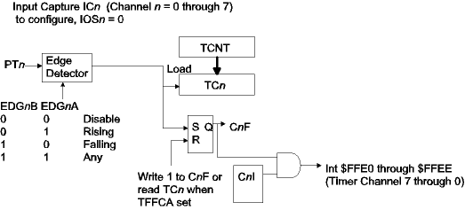

| Previous Section | Next Section | Index | Questions | Search the Text |
An Input Capture channel allows measuring the time (TCNT value) of a signal edge. Typical uses include measuring pulse widths and periods of external signals. It can also be used to edge trigger off of control signals, like key wakeups.
The block diagram for an Input Capture channel is shown in the figure below. All eight channels are the same, differing only in the bits and registers used. The diagram is for channel n, where n can have the value 0 through 7.
The Port T pin is monitored for an edge. The edge detector can be programmed (using the EDGnB and EDGnA bits) to trigger on rising, falling, or any edge. The disabled choice, the default, is selected when the channel is not being used. When the triggering edge occurs, the value in TCNT is loaded into the 16 bit data register TCn and the CnF flag bit is set. If the CnI control bit is set, then an interrupt unique to the channel number is requested. The CnF flag is reset in the typical 68HC12 fashion, by writing a 1 to the bit. However if the TFFCA control bit is set then CnF is reset by reading TCn. Since in most applications we will be reading TCn when the flag gets set, the TFFCA feature will save having to explicitly reset CnF. Care must be taken when using TFFCA=1 since this also affects the TCNT overflow flag resetting, as described in the preceding page.

The chart below shows the control and status registers used by the Timer Input Capture. Registers used are TIOS, TSCR1, TSCR2, TCTL3, TCTL4, TIE, and TFLG1. Data registers are the Timer Input Capture/Output Compare registers, TC0 through TC7, which are word registers. Also, PTIT can be read to see the current levels of the input pins.
| Timer Input Capture Control and Status Bits
(Bits in red are not used by input capture function) (Bits in blue are described under Timer Count) | ||||||||
| Register | Bit 7 | Bit 6 | Bit 5 | Bit 4 | Bit 3 | Bit 2 | Bit 1 | Bit 0 |
|---|---|---|---|---|---|---|---|---|
| TIOS | IOS7 | IOS6 | IOS5 | IOS4 | IOS3 | IOS2 | IOS1 | IOS0 |
| TSCR1 | TEN | TSWAI | TSFRZ | TFFCA | 0 | 0 | 0 | 0 |
| TSCR2 (was called TMSK2) | TOI | 0 | 0 | 0 | TCRE | PR2 | PR1 | PR0 |
| TCTL3 | EDG7B | EDG7A | EDG6B | EDG6A | EDG5B | EDG5A | EDG4B | EDG4A |
| TCTL4 | EDG3B | EDG3A | EDG2B | EDG2A | EDG1B | EDG1A | EDG0B | EDG0A |
| TIE (was called TMSK1) | C7I | C6I | C5I | C4I | C3I | C2I | C1I | C0I |
| TFLG1 | C7F | C6F | C5F | C4F | C3F | C2F | C1F | C0F |
Because bits for 4 or 8 channels are shared within single registers it is important to only alter the correct bits when changing the configuration. For this reason the bset and bclr instructions should be used. Only if the desired values for all bits in the register are known should a move or store instruction be used to alter the register.
Lets look at several examples of Input Capture use.
To measure a square wave period, we need to obtain the times of two consecutive rising (or two consecutive falling) edges, and take the difference between those times. Lets say we have a square wave signal connected to pin PT0, and we want to measure its period. We can use the following code:
bset TSCR1 #$90 ; Set TEN to enable timer, TFFCA for efficiency
bset TCTL4 #$01 ; Set EDG0A to capture on rising edges only
bclr TFLG1 #~$01 ; Make sure C0F is clear
L1: brclr TFLG1 #$01 L1 ; "Wait" until C0F has been set
ldd TC0 ; Get time of edge, which also clears C0F
L2: brclr TFLG1 #$01 L2 ; "Wait" again until C0F has been set
subd TC0 ; Calculate time difference S-E
negb ; negate register D to get E-S, the period
adca #0
nega
What are the limitations of our measurement? Well, we know that we cannot measure periods longer than 65535 counts, the maximum 16 bit value. At the maximum TCNT clock rate with a 24MHz system clock this is 2,730.625 microseconds. If we needed to measure longer periods we would either have to reduce the TCNT clock rate or extend the TC0 register. Extending TC0 is not as easy a task as extending TCNT was. How about the minimum measurement? The 68HC12 hardware specification says that pulse widths must be at least 2 clock periods, so the waveform period must be at least 4 clock periods or 0.167 microseconds. However there is another limitation - we must read the start time in register TC0 before the next edge loads TC0. This means we must be able to execute the brclr instruction and ldd instruction. From the reference manual, this takes 8 clock periods (assuming extended addressing). So the minimum period is 0.5 microseconds. Note that in a system that uses interrupts, it would be prudent to disable interrupts before making the measurement, and then re-enable interrupts immediately after making the measurement. If an interrupt occurs after the flag is set but before the time is read then the measurement will be invalid.
If we wanted to continuously monitor the external signal period, we could use interrupts and an interrupt service routine to read the edge times and calculate the period. We need two word variables. LASTTC0 holds the previous edge time and PERIOD holds the most recently calculated period. The latter variable is read anywhere in the program that the value of the signal period is needed. We initialize the timer with:
movw #tc0isr UserTimerCh0 ; initialize interupt vector D-BUG12
bset TSCR1 #$90 ; Set TEN to enable timer, TFFCA for efficiency
bset TCTL4 #$01 ; Set EDG0A to capture on rising edges only
bset TIE #$1 ; Set C0I = 1
The interrupt service routine is:
tc0isr:
ldd TC0 ; Current edge time
tfr D X ; Save a copy
subd LASTTC0 ; Calculate E-S
std PERIOD ; which is saved as period of signal
stx LASTTC0 ; Save TC0 value for next time
rti
Compared with the polled version, the interrupt driven version has the same maximum period limit, however it cannot measure small periods well - the entire interrupt service routine must execute between edges. In addition, the percentage of available CPU clock cycles devoted to making the measurement may increase to the point that system performance deteriorates or operation stops.
Measuring a pulse width is somewhat more involved because it is the difference between two different edges. Thus the channel must be reconfigured between the edges. For a positive going pulse (leading edge is rising and trailing edge is falling) the polled code becomes:
bset TSCR1 #$90 ; Set TEN to enable timer, TFFCA for efficiency
bset TCTL4 #$01 ; Set EDG0A to capture on rising edges only
bclr TFLG1 #~$01 ; Make sure C0F is clear
l1: brclr TFLG1 #$01 l1 ; "Wait" until C0F has been set
bset TCTL4 #$02 ; Set EDG0B to capture on either edge
ldd TC0 ; Get time of edge, which also clears C0F
l2: brclr TFLG1 #$01 l2 ; "Wait" again until C0F has been set
subd TC0 ; Calculate time difference S-E
negb ; negate register D to get E-S, the pulse width
adca #0
nega
After capturing the rising edge, the channel is configured to capture on either edge. Since the next edge is the falling edge, it will be captured. We could configure to capture on falling edges only, but that would take an additional instruction which would raise the minimum width we could measure.
To measure the shortest possible pulse widths (250 nanoseconds), we can use two channels, one to capture the leading edge and the second to capture the trailing edge. Connect the signal to both PT0 and PT1, and then the following code segment will work:
bset TSCR1 #$90 ; Set TEN to enable timer, TFFCA for efficiency
bset TCTL4 #$09 ; Channel 0 captures on rising edges, 1 on falling
bclr TFLG1 #~$02 ; Make sure C1F is clear
l1: brclr TFLG1 #$02 l1 ; "Wait" until C1F has been set
ldd TC1 ; Get end time
subd TC0 ; Subtract start time
We only wait for the trailing edge. The captured times will be for the trailing edge in TC1 and the preceding leading edge in TC0. It is important that the period between the pulses not be so short that TC1 and TC0 cannot be read before they change again.
In order to measure long periods, we need to capture the time with a larger count register than 16 bits. We can extend TCNT to 32 bits as show in the preceding section, with a variable CNTEXT which holds the upper 16 bits of the TCNT value. An interrupt routine increments CNTEXT whenever TCNT overflows.
In an ideal world, we could obtain the 32 bit TC0 time this way (interrupt driven TC0):
tc0isr:
bclr TFLG1 #~$1 ; Clear C0F, assuming TFFCA=0
ldd TC0 ; Lower 16 bits of time
ldx CNTEXT ; Upper 16 bits of time
When the edge is detected, TCNT is loaded into TC0, and then the interrupt occurs. The service routine fetches TC0 and the upper 16 bits of the TCNT time, CNTEXT. However there is a problem.
TCNT might have overflowed just prior to the count being loaded into TC0. Since the Timer Channel 0 interrupt is of higher priority than the Timer Overflow interrupt, the Timer Channel 0 is entered without CNTEXT being incremented to its correct value.
Elevating the priority of the Timer Overflow interrupt using the HPRIO register doesn't help. If TCNT overflows just after the count is loaded but before the current instruction finishes execution, CNTEXT will be one too high.
Instead, we need to examine in the interrupt service routine the TOF flag and the value in TC0 and decide if the CNTEXT value needs to be corrected. If TOF is set, there is a pending interrupt that will increment CNTEXT. If that is the case, we then examine the value in TC0. If the value is small we can safely assume that the overflow occurred prior to TC0 being loaded from TCNT. If the value is large we can safely assume that the overflow occurred after TC0 was being loaded from TCNT. The code to read the 32 bit time becomes:
tc0isr:
ldd TC0 ; Lower 16 bits of time
ldx CNTEXT ; Upper 16 bits of time (?)
brclr TFLG2 #$80 timok ; Branch if no TCNT overflow
tsta ; Check sign of TC0
bmi timok ; Negative means large - it's fine
inx ; Positive means small - increment upper
timok:
Continue with Output Compare.
Return to the Index.